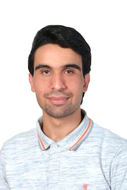

Ilyès kerkeni
👋 About

Hello I’m Ilyès. As an engineering student in applied mathematics at ENSTA Paris and master 2 “Probabilitées et finance (ex DEA EL KAROUI)”, I have developed a passion for quantitative finance and machine learning as applied to financial markets. With my strong analytical skills and deep understanding of mathematical modeling, I have gained valuable experience as a quantitative researcher trainee, developing rich models for autocallable products and conducting calibration to var swaps, covar swaps, vol swaps, and options. Currently, as a quant-data scientist trainee, I continue to develop my expertise in quantitative finance and machine learning, applying advanced statistical techniques to extract insights from complex financial data. With a commitment to continued learning and a passion for innovation, I am excited to make meaningful contributions to the field of quantitative finance and to help drive success for my organization.
💼 Professional Experience
Quantitative trader (full remote)
Eruditis
Milwaukee, USA
Juin 2022 - Now
- Part Time job (Freelance)
- Exploring and implementing trading strategies with ML and reinforcement learning.
- Implementing research papers.
Quant-Data scientist
Crédit Agricole CIB
Paris, France
01 March 2023 - 31 August 2023
- Project for USD VOL DESK (Gobal Market Division)
- Working side to side with the IRD exotic director trader and the head of AI GMD department to make financial market predictions and modeling
- Collecting and analyzing data from US insurers, forward rates, implied volatilities, and index values to anticipate and explain insurers’ trading activities.
- Building and maintaining new models, gaining 20points in performance.
Quantitative Reasearcher
HSBC Paris
Paris, France
29 August 2022 - 28 February 2023
- Research Project under the aiges of “Europlace Institut of Finance”
- Working with both machine learning models and multivariate rough volatility models, gaining expertise in the randomized signatures (rSig) pricing model and the quadratic Gaussian (qGauss) models.
- Developing rich models that remain numerically tractable for the fast generation of autocallable prices and sensitivities.
Quantitative Reasearcher
ENSAE Paris/CREST
Paris, France
1 Juin 2022 - 19 August 2022
- Exploring several approaches to estimate VaR and CoVaR using Parametric Models, Non-parametric models, Semi-parametric models
- Garch models, Monte carlo simulation, resampling, bootstrapping, python/R programming
🎓 Education
M.S. “Probabilitées et finance ex DEA EL KAROUI”
Ecole Polytechnique - Sorbonne University
Paris, France
September 2023 - 2024
- Courses: Machine Learning-Neural Networks-Deep Learning, Stochastic control and optimisation, High-frequency finance: probabilistic tools, statistical modeling, Machine learning and optimal trading etc..
Enginnering degree
Ensta Paris
Paris, France
September 2020 - 2024
- GPA=3.9/4
- Applied Mathematics (Statistics, Probability, Markov chains, Stochastic calculus, Optimization, Martingales, Time series, Monte-Carlo Methods, Machine learning, mathematical models in finance).
🏆 Projects
- Team enginner project H1N1 & flu predictions The aim is to predict whether a person is vaccinated against H1N1 and seasonal flu. we used here vast majority of classification mdeols (tree based models: XGboost, Catboost, RandomForest) neural networks ect..
- Predicting rent Prices
- Image Classififcation deploying a convolutional neural networks (with C) capable of classifying images according to their categories.
- Algorithmic Trading on Stocks (via IBKR API) and on Cryptos (via Binance API) The aim here is to build statistical arbitrage strategies on different markets, implement them in Python, and apply them to Interactives Brokers.
💾 Resume
🎖️ Certifications
💻 Technical skills
- Python : Pandas, numpy, Sikit-Learn, Pytorch, Tensorflow, Keras
- C++, C
- Matlab
- R
- Excel, PowerPoint, LaTex
- Dataiku, IBM waston studio
🎳 Hobbies
Reading 📚
GYM 🏋🏻♀️ and Swimming 🏊🏻♂️ (Almost 5 days per week)
Tennis 🎾 (Rafa Nadal)
(Ex) professional basketball player 🏀 .
Traveler 🧳.